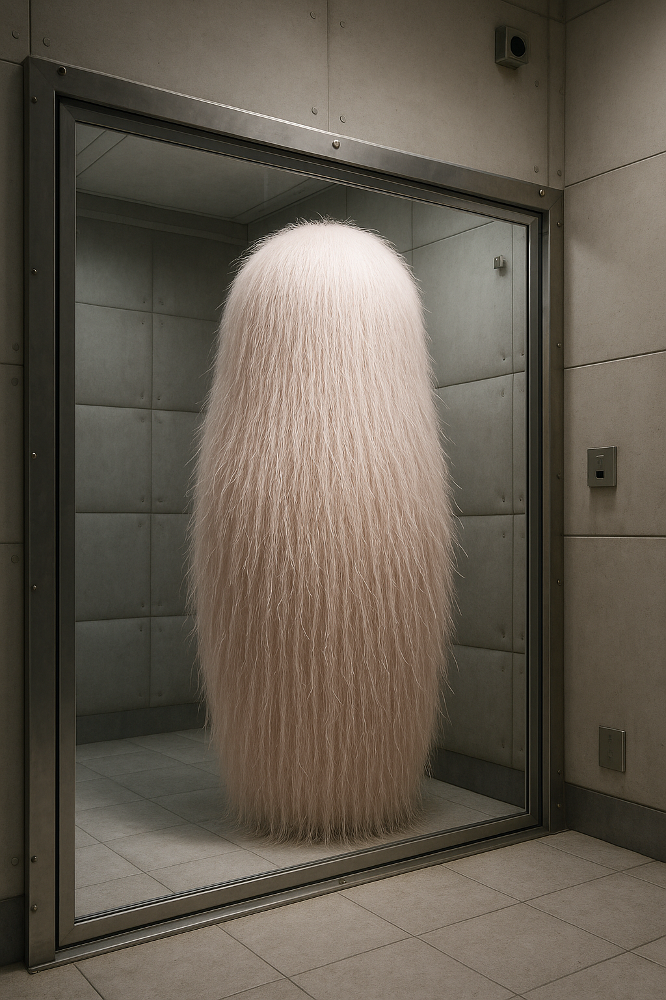

1. 기본 정보
- 개체명: 상식 수호자
- 개체 번호: KO-666666
- 위험 등급: 경미
- 교류 등급: 횡폭함
- 해명 등급: 대부분 해명
2. 특수 격리 절차
- 표준 인간형 개체 격리실에 격리.
- 격리실 내부에 소음 차단 장치 설치, 외부 소음 최소화.
- 개체 근처에서는 논리적이고 상식적인 발언만 허용.
- 비상식적·모순적 발언 금지.
- 상호작용은 레벨 2 이상 연구원만 허용, 면담 시 방음 장비 착용 필수.
3. 외형 및 특징

- 높이 약 2m의 원통형 생물체.
- 연한 분홍색, 표면은 매우 부드러운 편모로 덮여 있음.
- 인형이나 봉제 인형을 연상시키는 외관.
- 명확한 감각기관·발성기관 없음에도 주변 발언 인식 가능.
- 발언의 상식 여부를 판단 후 특정 음성 반응.
4. 행동 패턴
- 평상시: 조용히 중앙에 위치, 편모를 천천히 움직임.
- 상식적 발언: "상식을 채워!"라고 기쁜 목소리로 발화.
- 비상식적 발언: "상식을 채우지마!!"라고 날카롭게 반응.
- 심각한 비상식적 발언: "상식을 채우지 말라고!!!"라고 고음량 발성, 전신이 붉게 변함.
- 우려 상황: "상식을... 채워..."라고 중얼거리며 편모 움직임 둔화.
5. 실험 기록
- 실험 ████-A: "오늘 날씨가 좋네요." → "상식을 채워!" (정상 반응)
- 실험 ████-B: "물은 위로 흘러요." → "상식을 채우지마!!"
- 실험 ████-C: "1+1=3이고, 하늘은 초록색이며, 개가 야옹한다." → "상식을 채우지 말라고!!!" (15분간 지속)
6. 연구원 노트
- 개체는 인류의 상식·논리를 수호하려는 본능이 있는 것으로 보임.
- '상식' 기준은 문화·개인 차이가 아닌 보편적 기준으로 판단.
7. 발견 기록
- 발견 장소: 한국 ██시 초등학교.
- 상황: 교사의 상식적 발언에 "상식을 채워!" 발화 후 등장.
- 학생의 비상식 발언에 "상식을 채우지마!!" 반응.
- 무해한 외형으로 인해 공포 반응 없이 호기심 유발.
- 목격자 전원 A급 기억소거, 사건은 '가스 누출로 인한 집단 환청'으로 위장.
8. 부록
- 내부 애칭: "상식이".
- 일부 직원들이 중요한 결정을 내리기 전 개체 앞에서 계획을 말해보는 비공식 관행 존재.